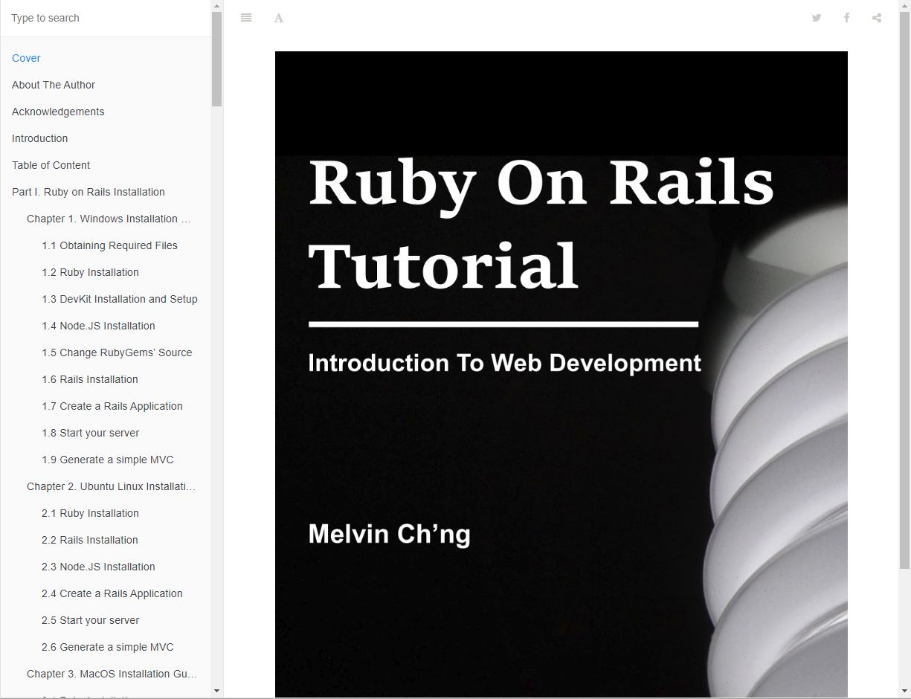
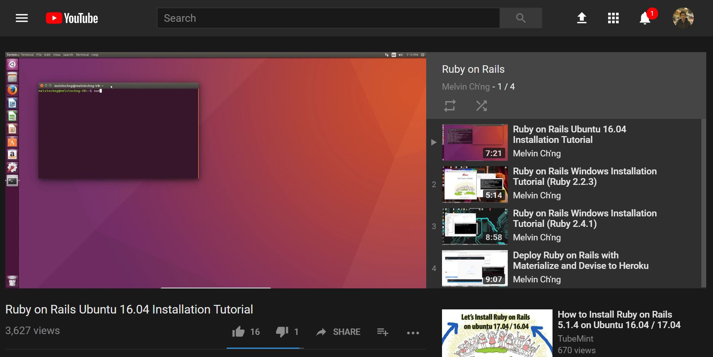
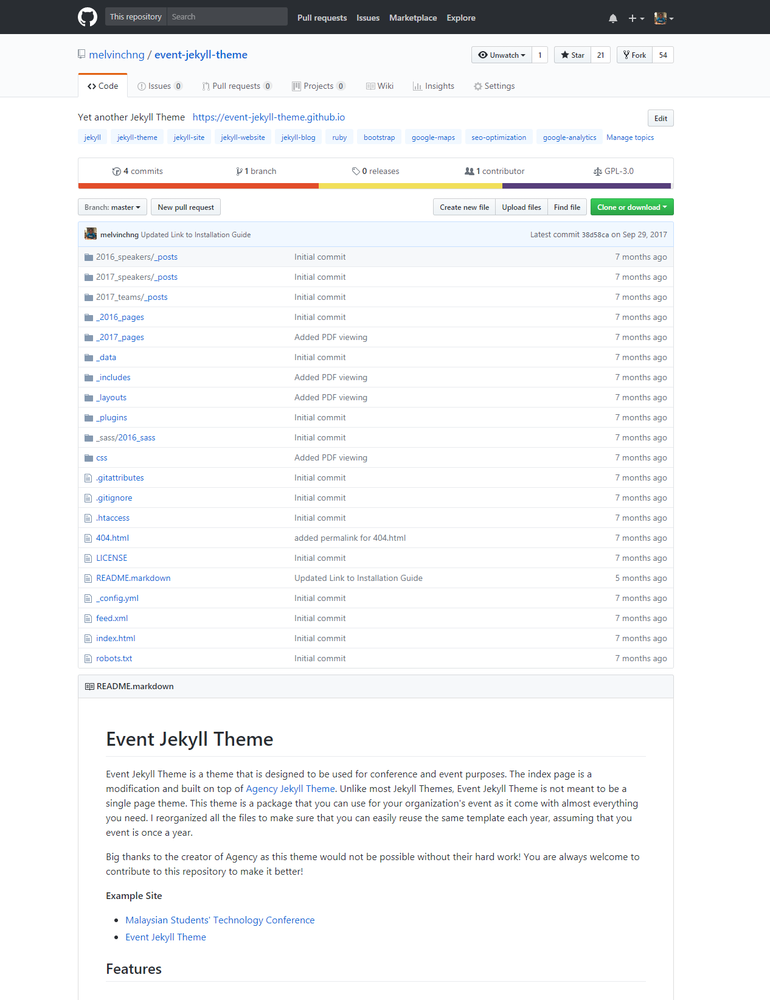
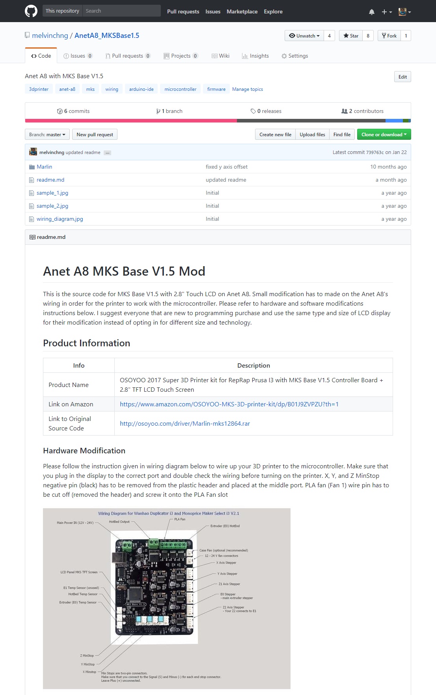
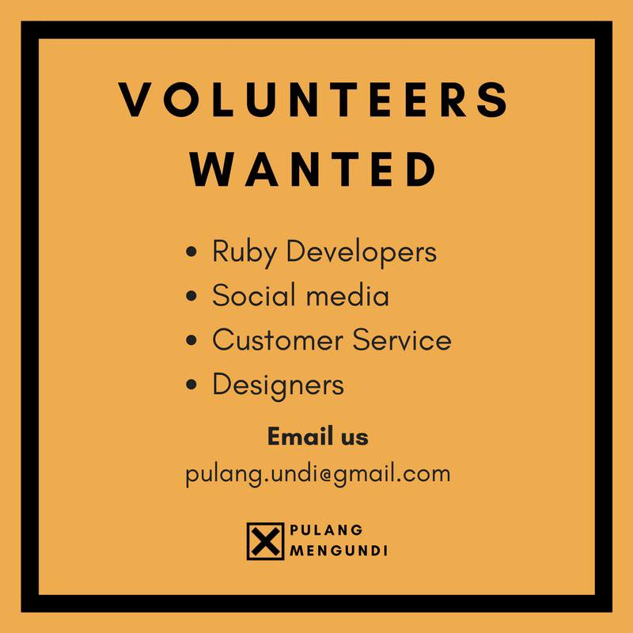

Last modified: Tue May 29 2018 19:45:22 GMT+0800 (Malay Peninsula Standard Time)
Open Source Contribution
Story Behind It
Knowledge is important and the availability of high quality content in the internet is more important to me. When I was in college, I relied on the information on the internet for my coursework. There were a lot of classes that I took taught the concept and basics of the coursework, I had to spend my time researching and finding great content in the internet.
I have most of my projects that I contributed to the internet open source. It is how I gave back to the community in exchange of what I got. Most of my projects are under GPL-3.0 (General Public License) and whoever that use the program must provide the source code to the public upon request.
From GNU FAQ
If I use a piece of software that has been obtained under the GNU GPL, am I allowed to modify the original code into a new program, then distribute and sell that new program commercially?
You are allowed to sell copies of the modified program commercially, but only under the terms of the GNU GPL. Thus, for instance, you must make the source code available to the users of the program as described in the GPL, and they must be allowed to redistribute and modify it as described in the GPL.
Below are a few of the open source content that I created individually. On each of the contribution I made, I was part of the progress and I learnt. More contents and source code are available on Github.
Ruby on Rails Tutorial
I started writing Ruby on Rails Tutorial when I was an ISA in college. It first started with installation guide on Windows machine as installing Ruby on Rails on Windows was one of the hardest thing to do in my own opinion. Students were struggling to install Rails on their machine by following the installation guide that the class professor extracted from one of the books. Then, with the positive feedback given by the students, I created more contents.

It covers the basic of Ruby on Rails in details. Unlike most coding materials, this tutorial is full of screenshot and explains everything in detail (as much as I could based on my knowledge). It would not say this is the best Ruby on Rails tutorial, but I did things differently.
Link to my Rails tutorial: melvinchng.github.io/rails
I also created some Ruby on Rails installation videos and compiled them into a playlist that can be found on Youtube.

At this point, I have no plan to update my Ruby on Rails tutorial as technology has changed too rapidly and I could not keep up with the changes. I believed it is a good tutorial for a newbie to get started on the programming language and framework. It had been proven by more than 300 students who took Software Engineering classes that was taught by Professor Mak and Prof Li in San Jose State University at Fall 2016, Spring 2017, and Fall 2017.
Event Jekyll Theme
I created this Jekyll Theme for one of the student lead conference that I was invited to participated at.
There was not a lot of theme created for Jekyll on the internet. Jekyll is meant to be single page. Unlike typical Jekyll theme, I created this theme that are meant to be multiple pages. The theme I created is meant to be used for small organization that would like to host events yearly. However, it can be taylor to what they need easily.
Information and instructions about my Event Jekyll Theme can be found on my Github repository.

I realized that there are quite a few overseas events that are actually using my theme packages. Well, it is actually a good thing for both me and them.
MKS Base & Anet A8
I created and ported firmware that was meant for other 3D printer to the first 3D Printer that I bought. I knew I was the first person that who created this and based on my research and analysis, what I was trying to attempt was completely possible. The manufacturer was kind enough to provide all the source code online at their website. With a few information that I gathered, I went around and start to implement. As expected based on my experience and knowledge, it worked after a few changes here and there. I contacted the manufacturer and gave the link to my source code. They were happy and thanked me several times.

Information and instructions about my firmware port can be found on my Github repository.
Pulang Mengundi
I am one of the members in Ruby on Rails Malaysia Facebook group and came across a post when I moved back from US to Malaysia.

I discovered that they need developer that experience in Ruby on Rails to assist them in their project. Since the project is beneficial to the public, I decided to jump onto the boat and helped them. The project was about "Malaysians helping Malaysians to vote" on 14th General Election. It was originally founded by 5 people, and expanded to close to 20 people. The entire team that I was working with on the subsidy division was very nice. A few of them are Senior Ruby on Rails Developer. I had fun working with them on the open source project.
I was not too sure how long they are going to keep the website and here is the link:
- Link to the main website: www.pulangmengundi.com
- Link to the subsidy website: subsidy.pulangmengundi.com
Business Jekyll Theme
I saw a good looking open source theme and wanted to port the theme over to Jekyll for business user. Since Jekyll is theme packages, why not port it over? And I actually did it.

Information and instructions about my Event Jekyll Theme can be found on my Github repository.
Jekyll For Everyone
The main purpose of this project is to allow everyone especially for non-programmer to own a website and platform to share their expertise without needing to worry about the cost of owning and maintaining their website. I heard from a lot of readers mentioning that they are in love with the simplicity of my website especially and would love to one one. They only reason that stops them from doing it is they do not have any programming experience and not a tech savvy. With that, this motivates me to write a complete tutorial on how to get started with Jekyll. It covers the basic of Jekyll in details plus written in ELIA5 (explains like you are like a 5 years old way to make sure that it is every to understand) ways.
Also, as a fresh graduate, I see the importance of owning a personal website when it comes to job hunting. If you love this project and would like to support it, spread the message and keep the footer as in.

Link to my Jekyll tutorial: melvinchng.github.io/jekyll
I also created some videos to show how easy to get started and compiled them into a playlist that can be found on Youtube.